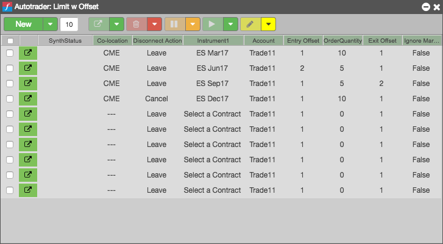

The Autotrader widget provides another way to prepare and launch algos. You can use the Autotrader widget to quickly set up and launch one or more instances of an algo. In the Autotrader widget, you can enter values manually, copy them directly from an Excel spreadsheet, or create dynamic links for the values in Excel to quickly set up multiple instances of algos for launch.
